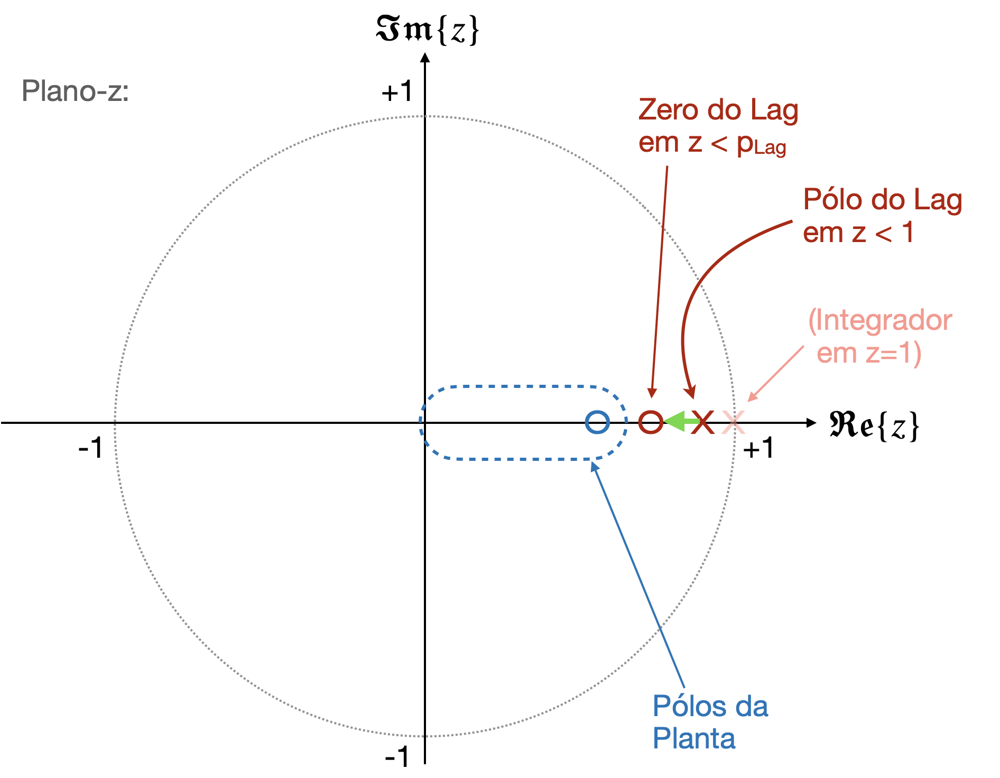
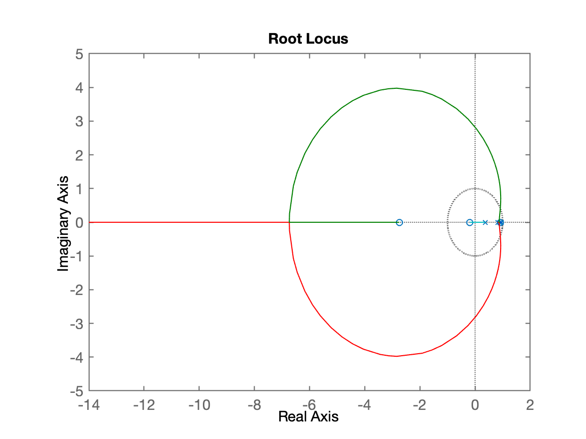
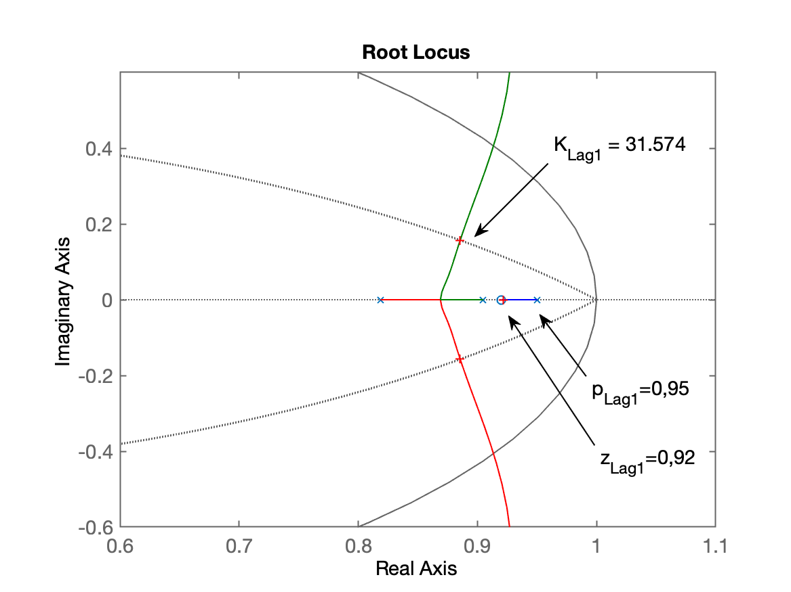
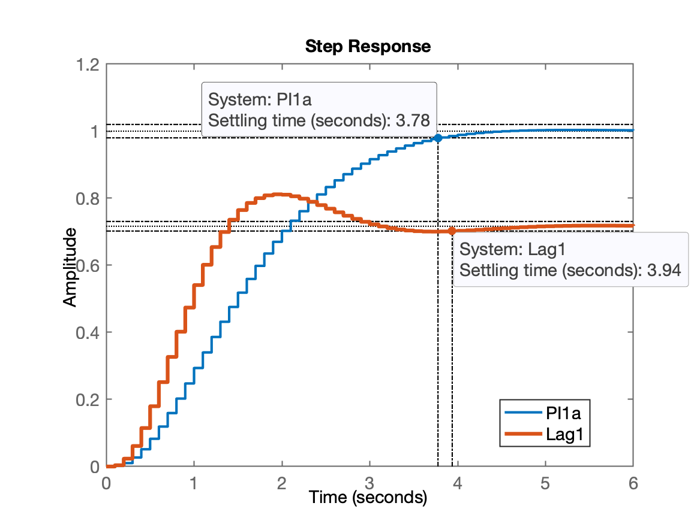
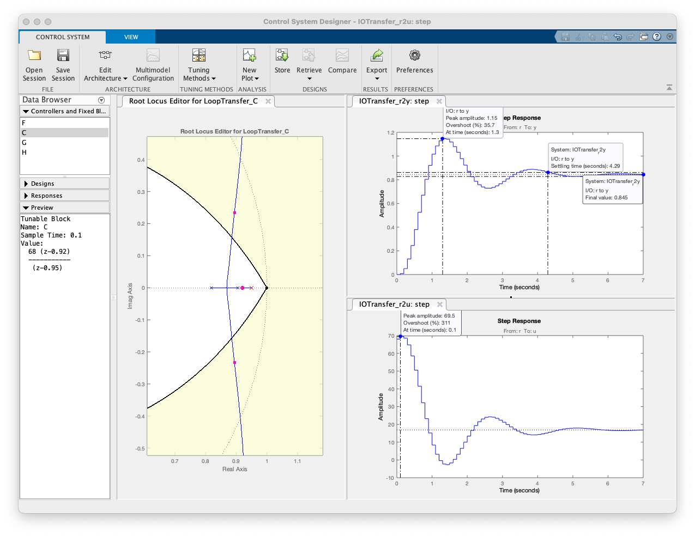
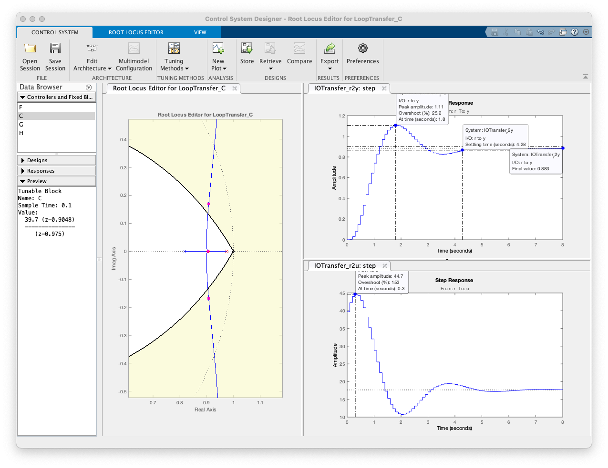
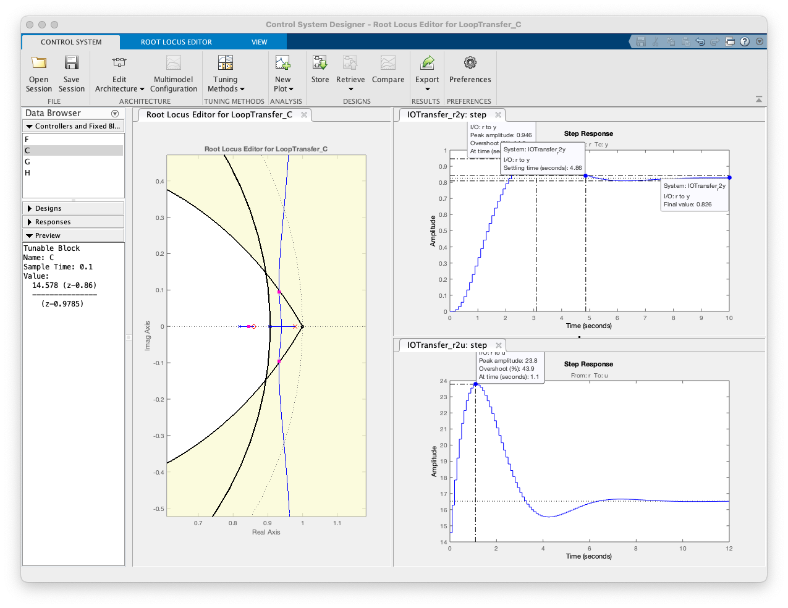

Recuperando dados da aula passada (de 07/04/2025 ), arquivo: [dados.mat]:
>> diary aula_140402025.txt>> load dados % recuperar dados da aula passadaContinuando da aula passada. Faltou integrador por "Atraso de Fase", ou simplemente "Lag". Sugere-se ver antes: Projeto de Lag (com teoria) (PDF).
Para este tipo de controlador, seu pólo "sai" do círculo unitário (). Considerar que quanto maior o afastamento, menor sua ação algo integradora (aumenta o erro de regime permanente), passando a atuar mais como um simples filtro passa-baixa. O zero deste controlador obviamente deve estar localizado no plano-z antes do pólo, mas muito provavelmente antes do pólo mais lento da planta à ser controlada (maior dominânica na resposta). Um esboço rápido no plano-z revela algo como:

Lembrando da eq. da planta, para alocar pólos e zeros para o controlador Lag:
xxxxxxxxxx>> zpk(BoG)ans = 0.00012224 (z+2.747) (z+0.1903) -------------------------------- (z-0.9048) (z-0.8187) (z-0.3679) Sample time: 0.1 secondsDiscrete-time zero/pole/gain model.>> p_Lag=(1+0.9048)/2p_Lag = 0.9524Localizando o zero do Lag no mesmo local do zero do PI1a realizado na aula anterior:
xxxxxxxxxx>> C_Lag1=tf( [1 -0.92], [1 -0.95], T )C_Lag1 = z - 0.92 -------- z - 0.95 Sample time: 0.1 secondsDiscrete-time transfer function.>> ftma_Lag1=C_Lag1*BoG;>> rlocus(ftma_Lag1)
Realizando o zoom na região de interesse:
xxxxxxxxxx>> axis([0.6 1.1 -0.6 0.6])>> hold on; zgrid(zeta,0) % acrescentnado linha guia do zeta para OS=15%
Terminando projeto:
xxxxxxxxxx>> [K_Lag1,polosMF]=rlocfind(ftma_Lag1)Select a point in the graphics windowselected_point = 0.88614 + 0.15604iK_Lag1 = 31.574polosMF = 0.92173 + 0i 0.88544 + 0.15611i 0.88544 - 0.15611i 0.34499 + 0i>> ftmf_Lag1=feedback(K_Lag1*ftma_Lag1, 1);>> figure; step(ftmf_PI1a, ftmf_Lag1)>> legend('PI1a', 'Lag1') % já comparando resposta com PI1a feito antes
Calculando erro:
xxxxxxxxxx>> erro_Lag1=((1-dcgain(ftmf_Lag1))/1)*100erro_Lag1 =28.362
Realizando o projeto melhorado do "Lag2", usando o App Control System Designer.
Repare que antes poderiámos ter ampliado o ganho do Lag1 para forçar (em relação à referência: entrada degrau unitário):
xxxxxxxxxx>> zpk(C_Lag1b)ans = 68 (z-0.92) ----------- (z-0.95) Name: CSample time: 0.1 secondsDiscrete-time zero/pole/gain model.Projeto do controlador até este ponto:

Melhorando este controlador...

Equação do Lag2:
xxxxxxxxxxzpk(C_Lag2)ans = 39.7 (z-0.9048) --------------- (z-0.975) Name: CSample time: 0.1 secondsDiscrete-time zero/pole/gain model.Se o ganho deste controlador for reduzido para , reduzimos o para 3,79 segundos, mas o erro em regime permanente aumenta para quase 20% ().
Tentando outro Lag: o "Lag3", mas note que aumenta às custas de erro mais baixo:

Fim.
Encerrando atividades usando MATLAB nesta aula:
xxxxxxxxxx>> save dados>> diary off>> quitContinuando com teoria de controladores com Ação Derivativa, tópicos:
Outros tópicos:
Fernando Passold, em 14/04/2025